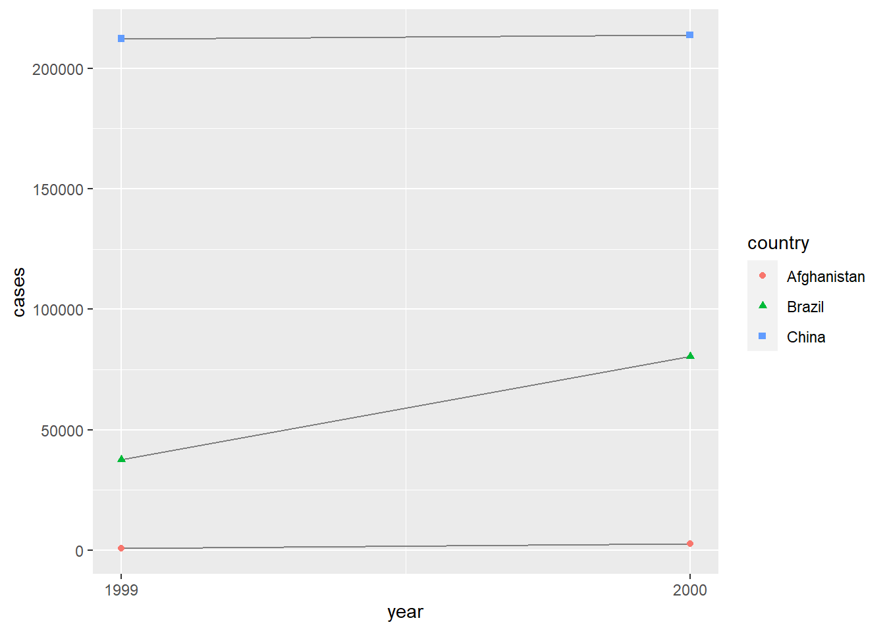
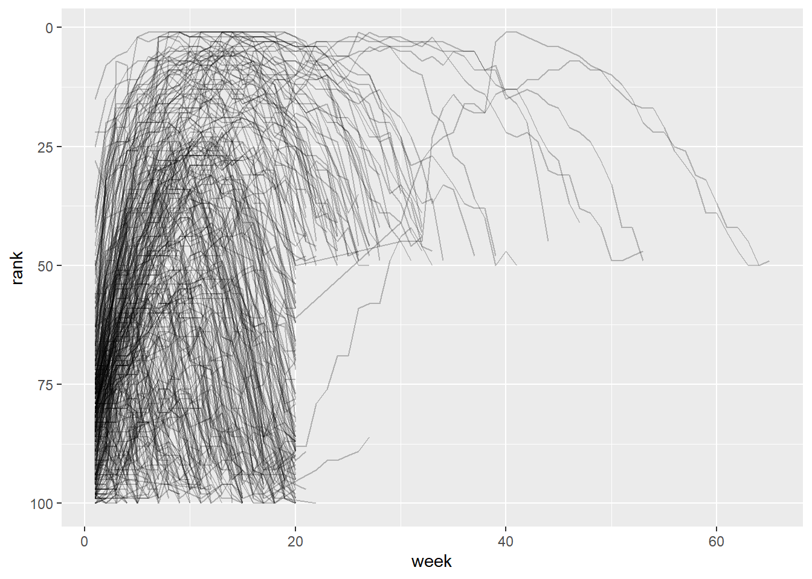

Topik 9 | Data Tidy
1. Konsep Data Tidy
Sebelum memulai analisa terhadap data yang kita miliki, umumnya kita akan merapikan data yang akan kita gunakan. Tujuannya adalah agar data yang akan digunakan sudah siap untuk dilakukan analisa, dimana pada dataset perlu adanya kejelasan antara variabel dan nilai (value), serta untuk mempermudah dalam memperoleh informasi pada data. Sebelum kita melakukan analisa di dataset tersebut, kita harus tahu dulu apa saja syarat suatu dataset dikatakan rapi (tidy). Berikut adalah syaratnya:
Setiap variabel harus memiliki kolomnya sendiri
Setiap observasi harus memiliki barisnya sendiri
Setiap nilai berada pada sel tersendiri
Ketiga syarat tersebut saling berhubungan sehingga jika salah satu syarat tersebut tidak terpenuhi, maka dataset belum bisa dikatakan tidy. Ketiga syarat tersebut dapat divisualisasikan :
2. Data Tidy (tidyverse)
Dalam bab ini kita akan menggunakan element tidyR, sebuah paket yang menyediakan banyak tools untuk membantu merapikan kumpulan data yang berantakan, tidyR adalah bagian dari tidyverse.
#> Load paket tidyverse
library(tidyverse)Contohnya tabel dibawah ini menunjukkan data yang sama yang disusun dalam tiga cara berbeda. Setiap dataset menunjukkan nilai yang sama dari empat variabel: negara, tahun, populasi, dan jumlah kasus TB (tuberkulosis), tetapi setiap dataset mengatur posisi nilai-nilainya dengan cara yang berbeda.
#> Tampilkan Tabel 1
table1# A tibble: 6 × 4
country year cases population
<chr> <dbl> <dbl> <dbl>
1 Afghanistan 1999 745 19987071
2 Afghanistan 2000 2666 20595360
3 Brazil 1999 37737 172006362
4 Brazil 2000 80488 174504898
5 China 1999 212258 1272915272
6 China 2000 213766 1280428583#> Tampilkan Tabel 2
table2# A tibble: 12 × 4
country year type count
<chr> <dbl> <chr> <dbl>
1 Afghanistan 1999 cases 745
2 Afghanistan 1999 population 19987071
3 Afghanistan 2000 cases 2666
4 Afghanistan 2000 population 20595360
5 Brazil 1999 cases 37737
6 Brazil 1999 population 172006362
7 Brazil 2000 cases 80488
8 Brazil 2000 population 174504898
9 China 1999 cases 212258
10 China 1999 population 1272915272
11 China 2000 cases 213766
12 China 2000 population 1280428583#> Tampilkan Tabel 3
table3# A tibble: 6 × 3
country year rate
<chr> <dbl> <chr>
1 Afghanistan 1999 745/19987071
2 Afghanistan 2000 2666/20595360
3 Brazil 1999 37737/172006362
4 Brazil 2000 80488/174504898
5 China 1999 212258/1272915272
6 China 2000 213766/1280428583Dapat dilihat bahwa tabel 1 akan jauh lebih mudah dipahami untuk proses analisis dalam tidyverse karena rapi (tidy)
Maka dari itu, terdapat keuntungan mengapa data harus rapi (tidy) :
Konsistensi dalam menyimpan data, jika kita memiliki struktur data yang konsisten, akan lebih mudah untuk mempelajari tools yang dipakai untuk mem-prosesnya karena memiliki keseragaman.
Lebih mudah untuk menempatkan variabel dalam kolom karena memungkinkan transformasi data yang rapi (tidy) secara terstruktur.
2.1 Paket tidyverse
Ada sejumlah package R yang dapat digunakan untuk mengatur form data rapi (tidy) :
ggplot2: sistem plot berdasarkan tata grafikmagrittr: mendefinisikan operator untuk fungsi chaining bersama%>%dalam serangkaian operasi pada datadplyr: serangkaian fungsi (cepat) untuk bekerja dengan frame datatidyr: data yang mudah dirapikan denganspread()fungsi ANDgather()
Misalnya kita akan manampilkan rentang data dengan ggplot
#> Hitung rate per 10,000
table1 |>
mutate(rate = cases / population * 10000)# A tibble: 6 × 5
country year cases population rate
<chr> <dbl> <dbl> <dbl> <dbl>
1 Afghanistan 1999 745 19987071 0.373
2 Afghanistan 2000 2666 20595360 1.29
3 Brazil 1999 37737 172006362 2.19
4 Brazil 2000 80488 174504898 4.61
5 China 1999 212258 1272915272 1.67
6 China 2000 213766 1280428583 1.67 #> Hitung total cases per tahun
table1 |>
group_by(year) |>
summarize(total_cases = sum(cases))# A tibble: 2 × 2
year total_cases
<dbl> <dbl>
1 1999 250740
2 2000 296920#> Visualisasi perubahan setiap waktu
ggplot(table1, aes(x = year, y = cases)) +
geom_line(aes(group = country), color = "grey50") +
geom_point(aes(color = country, shape = country)) +
scale_x_continuous(breaks = c(1999, 2000)) 
3. Pivot Data
Pivot Data berfungsi untuk merangkum, mengelompokkan, mengeksplorasi, mempresentasikan , menghitung, dan menganalisa data. Kita bisa memanipulasi dan mengubah layout atau tampilan data sesuai kebutuhan.
3.1 Cara Kerja Pivot
Misalkan kita memiliki tiga pasien dengan id_pasien Ali, Budi, dan Candra, dan kita melakukan dua pengukuran tekanan darah pada setiap pasien. Kita akan membuat data dengan fungsi tribble() :
data_pasien <- tribble(
~id_pasien, ~tekanan_darah1, ~tekanan_darah2,
"Ali", 100, 120,
"Budi", 140, 115,
"Candra", 120, 125
)
data_pasien# A tibble: 3 × 3
id_pasien tekanan_darah1 tekanan_darah2
<chr> <dbl> <dbl>
1 Ali 100 120
2 Budi 140 115
3 Candra 120 125Lalu kita akan merapikan data agar lebih mudah dalam analisa tekanan darah pasien dengan menambah kolom pengukuran dan nilai pada fungsi pivot longer:
data_pasien |>
pivot_longer(
cols = tekanan_darah1:tekanan_darah2,
names_to = "pengukuran",
values_to = "nilai"
)# A tibble: 6 × 3
id_pasien pengukuran nilai
<chr> <chr> <dbl>
1 Ali tekanan_darah1 100
2 Ali tekanan_darah2 120
3 Budi tekanan_darah1 140
4 Budi tekanan_darah2 115
5 Candra tekanan_darah1 120
6 Candra tekanan_darah2 125Sehingga gambaran proses pivot data akan seperti berikut :

3.2 Visualisasi Pivot Data
Misal kita akan menganalisa data pada datasets billboard peringkat lagu tahun 2000
#> Load datasets billboard
billboard# A tibble: 317 × 79
artist track date.entered wk1 wk2 wk3 wk4 wk5 wk6 wk7 wk8
<chr> <chr> <date> <dbl> <dbl> <dbl> <dbl> <dbl> <dbl> <dbl> <dbl>
1 2 Pac Baby… 2000-02-26 87 82 72 77 87 94 99 NA
2 2Ge+her The … 2000-09-02 91 87 92 NA NA NA NA NA
3 3 Doors D… Kryp… 2000-04-08 81 70 68 67 66 57 54 53
4 3 Doors D… Loser 2000-10-21 76 76 72 69 67 65 55 59
5 504 Boyz Wobb… 2000-04-15 57 34 25 17 17 31 36 49
6 98^0 Give… 2000-08-19 51 39 34 26 26 19 2 2
7 A*Teens Danc… 2000-07-08 97 97 96 95 100 NA NA NA
8 Aaliyah I Do… 2000-01-29 84 62 51 41 38 35 35 38
9 Aaliyah Try … 2000-03-18 59 53 38 28 21 18 16 14
10 Adams, Yo… Open… 2000-08-26 76 76 74 69 68 67 61 58
# ℹ 307 more rows
# ℹ 68 more variables: wk9 <dbl>, wk10 <dbl>, wk11 <dbl>, wk12 <dbl>,
# wk13 <dbl>, wk14 <dbl>, wk15 <dbl>, wk16 <dbl>, wk17 <dbl>, wk18 <dbl>,
# wk19 <dbl>, wk20 <dbl>, wk21 <dbl>, wk22 <dbl>, wk23 <dbl>, wk24 <dbl>,
# wk25 <dbl>, wk26 <dbl>, wk27 <dbl>, wk28 <dbl>, wk29 <dbl>, wk30 <dbl>,
# wk31 <dbl>, wk32 <dbl>, wk33 <dbl>, wk34 <dbl>, wk35 <dbl>, wk36 <dbl>,
# wk37 <dbl>, wk38 <dbl>, wk39 <dbl>, wk40 <dbl>, wk41 <dbl>, wk42 <dbl>, …Tiga kolom pertama ( artist , track dan date.entered ) adalah variabel yang mendeskripsikan lagu. Kemudian 76 kolom ( wk1 - wk76 ) yang menggambarkan peringkat lagu di setiap minggu. Lalu, kita akan merapikan data dengan menambah kolom variabel (week) dan nilai sel adalah (rank).
Untuk merapikan data ini, kita akan menggunakan pivot_longer() :
#> Pangggil fungsi pivot
billboard |>
pivot_longer(
cols = starts_with("wk"),
#> Nama variabel baru
names_to = "week",
#> Nilai Variabel baru
values_to = "rank",
values_drop_na = TRUE
)# A tibble: 5,307 × 5
artist track date.entered week rank
<chr> <chr> <date> <chr> <dbl>
1 2 Pac Baby Don't Cry (Keep... 2000-02-26 wk1 87
2 2 Pac Baby Don't Cry (Keep... 2000-02-26 wk2 82
3 2 Pac Baby Don't Cry (Keep... 2000-02-26 wk3 72
4 2 Pac Baby Don't Cry (Keep... 2000-02-26 wk4 77
5 2 Pac Baby Don't Cry (Keep... 2000-02-26 wk5 87
6 2 Pac Baby Don't Cry (Keep... 2000-02-26 wk6 94
7 2 Pac Baby Don't Cry (Keep... 2000-02-26 wk7 99
8 2Ge+her The Hardest Part Of ... 2000-09-02 wk1 91
9 2Ge+her The Hardest Part Of ... 2000-09-02 wk2 87
10 2Ge+her The Hardest Part Of ... 2000-09-02 wk3 92
# ℹ 5,297 more rowscolsuntuk menentukan kolom mana yang perlu dipivot, Argumen ini menggunakan sintaks yang sama seperti select() jadi di sini kita bisa menggunakan!c(artist, track, date.entered)ataustarts_with("wk").names_tountuk menamai variabel yang disimpan dalam nama kolom, dengan variabelweek.values_tountuk menamai variabel yang disimpan dalam nilai sel, pada variabelrank.
Selanjutnya kita ubah type data week dengan parse_number agar menjadi angka sebagai variabel perhitungan
billboard_longer <- billboard |>
pivot_longer(
cols = starts_with("wk"),
names_to = "week",
values_to = "rank",
values_drop_na = TRUE
) |>
mutate(
week = parse_number(week)
)
billboard_longer# A tibble: 5,307 × 5
artist track date.entered week rank
<chr> <chr> <date> <dbl> <dbl>
1 2 Pac Baby Don't Cry (Keep... 2000-02-26 1 87
2 2 Pac Baby Don't Cry (Keep... 2000-02-26 2 82
3 2 Pac Baby Don't Cry (Keep... 2000-02-26 3 72
4 2 Pac Baby Don't Cry (Keep... 2000-02-26 4 77
5 2 Pac Baby Don't Cry (Keep... 2000-02-26 5 87
6 2 Pac Baby Don't Cry (Keep... 2000-02-26 6 94
7 2 Pac Baby Don't Cry (Keep... 2000-02-26 7 99
8 2Ge+her The Hardest Part Of ... 2000-09-02 1 91
9 2Ge+her The Hardest Part Of ... 2000-09-02 2 87
10 2Ge+her The Hardest Part Of ... 2000-09-02 3 92
# ℹ 5,297 more rowsKemudian kita memvisualisasikan bagaimana peringkat lagu dari waktu ke waktu dengan fungsi ggplot
#> Visualisasi pivot data
billboard_longer |>
ggplot(aes(x = week, y = rank, group = track)) +
geom_line(alpha = 0.25) +
scale_y_reverse()
Dapat dilihat bahwa Plot line menunjukkan hanya sedikit lagu yang bertahan di 100 teratas selama lebih dari 20 minggu.
4. Data Transform
Data Transformation adalah salah satu aspek kunci dari rangkaian analisis data, data science atau bahkan untuk machine learning. Paket R yang akan kita gunakan di sini adalah tidyverse.
beberapa fungsi yang dapat dipakai untuk proses Data Transform seperti :
arrange (): untuk menyusun urutan variabel datasetsselect (): untuk memilih variabel atau kolomdistinct (): untuk menghilangkan duplikat datasetsfilter (): untuk memfilter datasets berdasarkan nilainyarename (): untuk mengganti nama variable datasetsrelocate (): untuk mengubah posisi variable datasetsgroup_by () & summarize (): meringkas datasets ke dalam kelompokmutate (): untuk membuat variabel baru dari variabel yang sudah ada
4.1 Library Paket
Dalam bab ini kita akan fokus pada paket dplyr, bagian dari tidyverse. Dengan menggunakan datasets dari paket nycflights13, dan menggunakan command pada baris, kolom, serta kelompok untuk membantu memahami data.
#> Load paket tidyverse dan datasets jadwal penerbangan
library(tidyverse)
library(nycflights13)Untuk mengeksplorasi dplyr, kita akan menggunakan nycflights13::flights . Kumpulan data ini berisi 336.776 penerbangan yang berangkat dari New York City pada tahun 2013. Data berasal dari Biro Statistik Transportasi AS, dan didokumentasikan dalam flights.
flights# A tibble: 336,776 × 19
year month day dep_time sched_dep_time dep_delay arr_time sched_arr_time
<int> <int> <int> <int> <int> <dbl> <int> <int>
1 2013 1 1 517 515 2 830 819
2 2013 1 1 533 529 4 850 830
3 2013 1 1 542 540 2 923 850
4 2013 1 1 544 545 -1 1004 1022
5 2013 1 1 554 600 -6 812 837
6 2013 1 1 554 558 -4 740 728
7 2013 1 1 555 600 -5 913 854
8 2013 1 1 557 600 -3 709 723
9 2013 1 1 557 600 -3 838 846
10 2013 1 1 558 600 -2 753 745
# ℹ 336,766 more rows
# ℹ 11 more variables: arr_delay <dbl>, carrier <chr>, flight <int>,
# tailnum <chr>, origin <chr>, dest <chr>, air_time <dbl>, distance <dbl>,
# hour <dbl>, minute <dbl>, time_hour <dttm>flights adalah jenis tibble, frame khusus yang digunakan oleh tidyverse. Perbedaan paling penting antara tibbles dan data.frame adalah cara tibbles menampilkan data; keduanya dirancang untuk menghimpun data besar, sehingga hanya menampilkan beberapa baris pertama dan hanya kolom yang muat di satu layar. Ada beberapa opsi untuk melihat semuanya, seperti glimpse() untuk menampilkan semua kolom.
glimpse(flights)Rows: 336,776
Columns: 19
$ year <int> 2013, 2013, 2013, 2013, 2013, 2013, 2013, 2013, 2013, 2…
$ month <int> 1, 1, 1, 1, 1, 1, 1, 1, 1, 1, 1, 1, 1, 1, 1, 1, 1, 1, 1…
$ day <int> 1, 1, 1, 1, 1, 1, 1, 1, 1, 1, 1, 1, 1, 1, 1, 1, 1, 1, 1…
$ dep_time <int> 517, 533, 542, 544, 554, 554, 555, 557, 557, 558, 558, …
$ sched_dep_time <int> 515, 529, 540, 545, 600, 558, 600, 600, 600, 600, 600, …
$ dep_delay <dbl> 2, 4, 2, -1, -6, -4, -5, -3, -3, -2, -2, -2, -2, -2, -1…
$ arr_time <int> 830, 850, 923, 1004, 812, 740, 913, 709, 838, 753, 849,…
$ sched_arr_time <int> 819, 830, 850, 1022, 837, 728, 854, 723, 846, 745, 851,…
$ arr_delay <dbl> 11, 20, 33, -18, -25, 12, 19, -14, -8, 8, -2, -3, 7, -1…
$ carrier <chr> "UA", "UA", "AA", "B6", "DL", "UA", "B6", "EV", "B6", "…
$ flight <int> 1545, 1714, 1141, 725, 461, 1696, 507, 5708, 79, 301, 4…
$ tailnum <chr> "N14228", "N24211", "N619AA", "N804JB", "N668DN", "N394…
$ origin <chr> "EWR", "LGA", "JFK", "JFK", "LGA", "EWR", "EWR", "LGA",…
$ dest <chr> "IAH", "IAH", "MIA", "BQN", "ATL", "ORD", "FLL", "IAD",…
$ air_time <dbl> 227, 227, 160, 183, 116, 150, 158, 53, 140, 138, 149, 1…
$ distance <dbl> 1400, 1416, 1089, 1576, 762, 719, 1065, 229, 944, 733, …
$ hour <dbl> 5, 5, 5, 5, 6, 5, 6, 6, 6, 6, 6, 6, 6, 6, 6, 5, 6, 6, 6…
$ minute <dbl> 15, 29, 40, 45, 0, 58, 0, 0, 0, 0, 0, 0, 0, 0, 0, 59, 0…
$ time_hour <dttm> 2013-01-01 05:00:00, 2013-01-01 05:00:00, 2013-01-01 0…Dalam kedua tampilan, nama variabel diikuti oleh singkatan yang memberi tahu jenis setiap variabel: <int> adalah kependekan dari bilangan bulat, <dbl> kependekan dari double ( bilangan real), <chr> untuk karakter (string) dan <dttm> untuk tanggal-waktu.
4.2 dplyr
dplyr adalah sebuah paket dalam bahasa pemrograman R yang digunakan untuk memanipulasi data dengan mudah dan paket ini menyediakan banyak fungsi yang berguna untuk memfilter, mengurutkan, mengelompokkan, dan mengubah data. Package dplyr dibuat oleh Hadley Wickham juga sebagai penulis dalam acuan pada modul ini. Fungsi-fungsi tersebut dapat digunakan untuk memanipulasi data dengan lebih cepat dan mudah dibandingkan dengan menggunakan fungsi bawaan Rdplyr yang juga merupakan bagian dari kelompok paket tidyverse.
5. Baris Data
Fungsi terpenting pada baris himpunan data adalah filter() , yang mengubah baris tanpa mengubah urutannya, dan arrange() , yang mengubah urutan baris tanpa mengubah mana yang ada. Kedua fungsi hanya mempengaruhi baris, dan kolom dibiarkan tidak berubah. Ada juga distinct() untuk menemukan baris dengan nilai unik tetapi tidak seperti arrange() dan filter().
5.1 filter()
filter() memungkinkan kita menampilkan baris berdasarkan nilai kolom. Misalnya, kita dapat menemukan semua penerbangan yang berangkat terlambat lebih dari 120 menit (dua jam):
flights |>
filter(dep_delay > 120)# A tibble: 9,723 × 19
year month day dep_time sched_dep_time dep_delay arr_time sched_arr_time
<int> <int> <int> <int> <int> <dbl> <int> <int>
1 2013 1 1 848 1835 853 1001 1950
2 2013 1 1 957 733 144 1056 853
3 2013 1 1 1114 900 134 1447 1222
4 2013 1 1 1540 1338 122 2020 1825
5 2013 1 1 1815 1325 290 2120 1542
6 2013 1 1 1842 1422 260 1958 1535
7 2013 1 1 1856 1645 131 2212 2005
8 2013 1 1 1934 1725 129 2126 1855
9 2013 1 1 1938 1703 155 2109 1823
10 2013 1 1 1942 1705 157 2124 1830
# ℹ 9,713 more rows
# ℹ 11 more variables: arr_delay <dbl>, carrier <chr>, flight <int>,
# tailnum <chr>, origin <chr>, dest <chr>, air_time <dbl>, distance <dbl>,
# hour <dbl>, minute <dbl>, time_hour <dttm>Untuk filtering > (lebih besar dari), dapat menggunakan >= (lebih besar dari atau sama dengan), < (kurang dari), <= (kurang dari atau sama dengan), == (sama dengan), dan != (tidak sama dengan). Kita juga dapat menggabungkan kondisi untuk menunjukkan “AND” (periksa kedua kondisi) dengan & , serta | untuk menunjukkan “OR” (periksa salah satu kondisi):
Misal penerbangan pada keberangkatan 1 Januari
#> Menggunakan perintah & untuk 2 kondisi yang harus dipenuhi (AND)
flights |>
filter(month == 1 & day == 1)# A tibble: 842 × 19
year month day dep_time sched_dep_time dep_delay arr_time sched_arr_time
<int> <int> <int> <int> <int> <dbl> <int> <int>
1 2013 1 1 517 515 2 830 819
2 2013 1 1 533 529 4 850 830
3 2013 1 1 542 540 2 923 850
4 2013 1 1 544 545 -1 1004 1022
5 2013 1 1 554 600 -6 812 837
6 2013 1 1 554 558 -4 740 728
7 2013 1 1 555 600 -5 913 854
8 2013 1 1 557 600 -3 709 723
9 2013 1 1 557 600 -3 838 846
10 2013 1 1 558 600 -2 753 745
# ℹ 832 more rows
# ℹ 11 more variables: arr_delay <dbl>, carrier <chr>, flight <int>,
# tailnum <chr>, origin <chr>, dest <chr>, air_time <dbl>, distance <dbl>,
# hour <dbl>, minute <dbl>, time_hour <dttm>Atau penerbangan pada keberangkatan di bukan Januari atau Februari
#> Menggunakan perintah | untuk antara 1 kondisi yang harus dipenuhi (OR)
flights |>
filter(month == 1 | month == 2)# A tibble: 51,955 × 19
year month day dep_time sched_dep_time dep_delay arr_time sched_arr_time
<int> <int> <int> <int> <int> <dbl> <int> <int>
1 2013 1 1 517 515 2 830 819
2 2013 1 1 533 529 4 850 830
3 2013 1 1 542 540 2 923 850
4 2013 1 1 544 545 -1 1004 1022
5 2013 1 1 554 600 -6 812 837
6 2013 1 1 554 558 -4 740 728
7 2013 1 1 555 600 -5 913 854
8 2013 1 1 557 600 -3 709 723
9 2013 1 1 557 600 -3 838 846
10 2013 1 1 558 600 -2 753 745
# ℹ 51,945 more rows
# ℹ 11 more variables: arr_delay <dbl>, carrier <chr>, flight <int>,
# tailnum <chr>, origin <chr>, dest <chr>, air_time <dbl>, distance <dbl>,
# hour <dbl>, minute <dbl>, time_hour <dttm>5.2 arrange()
Kita dapat menggunakan desc() di dalam arrange() untuk mengurutkan ulang data.frame berdasarkan kolom tersebut (besar ke kecil). Misalnya, mengurutkan data penerbangan dari yang paling sering tertunda hingga paling jarang:
#> Perintah mengurutkan data berdasarkan kolom dep_delay
flights |>
arrange(desc(dep_delay))# A tibble: 336,776 × 19
year month day dep_time sched_dep_time dep_delay arr_time sched_arr_time
<int> <int> <int> <int> <int> <dbl> <int> <int>
1 2013 1 9 641 900 1301 1242 1530
2 2013 6 15 1432 1935 1137 1607 2120
3 2013 1 10 1121 1635 1126 1239 1810
4 2013 9 20 1139 1845 1014 1457 2210
5 2013 7 22 845 1600 1005 1044 1815
6 2013 4 10 1100 1900 960 1342 2211
7 2013 3 17 2321 810 911 135 1020
8 2013 6 27 959 1900 899 1236 2226
9 2013 7 22 2257 759 898 121 1026
10 2013 12 5 756 1700 896 1058 2020
# ℹ 336,766 more rows
# ℹ 11 more variables: arr_delay <dbl>, carrier <chr>, flight <int>,
# tailnum <chr>, origin <chr>, dest <chr>, air_time <dbl>, distance <dbl>,
# hour <dbl>, minute <dbl>, time_hour <dttm>5.3 distinct()
distinct() digunakan untuk menampilkan semua baris unik dalam himpunan data sehingga menghilangkan baris data duplikat. Kita juga dapat menambahkan kombinasi untuk kolom yang berbeda dari beberapa variabel.
# Menghilangkan duplicate baris, jika ada
flights |>
distinct()# A tibble: 336,776 × 19
year month day dep_time sched_dep_time dep_delay arr_time sched_arr_time
<int> <int> <int> <int> <int> <dbl> <int> <int>
1 2013 1 1 517 515 2 830 819
2 2013 1 1 533 529 4 850 830
3 2013 1 1 542 540 2 923 850
4 2013 1 1 544 545 -1 1004 1022
5 2013 1 1 554 600 -6 812 837
6 2013 1 1 554 558 -4 740 728
7 2013 1 1 555 600 -5 913 854
8 2013 1 1 557 600 -3 709 723
9 2013 1 1 557 600 -3 838 846
10 2013 1 1 558 600 -2 753 745
# ℹ 336,766 more rows
# ℹ 11 more variables: arr_delay <dbl>, carrier <chr>, flight <int>,
# tailnum <chr>, origin <chr>, dest <chr>, air_time <dbl>, distance <dbl>,
# hour <dbl>, minute <dbl>, time_hour <dttm>atau kita akan mencari keberangkatan dan tujuan (unik) untuk setiap penerbangan sehingga hanya membaca satu tipe penerbangan yang semacam, hilangkan duplikat dengan kolom origin dan destination
#> Cari keberangkatan dan tujuan tanpa duplikat
flights |>
distinct(origin, dest)# A tibble: 224 × 2
origin dest
<chr> <chr>
1 EWR IAH
2 LGA IAH
3 JFK MIA
4 JFK BQN
5 LGA ATL
6 EWR ORD
7 EWR FLL
8 LGA IAD
9 JFK MCO
10 LGA ORD
# ℹ 214 more rowskita juga dapat menghitung jumlah penerbangan yang semacam tadi dengan fungsi count()
flights |>
count(origin, dest, sort = TRUE)# A tibble: 224 × 3
origin dest n
<chr> <chr> <int>
1 JFK LAX 11262
2 LGA ATL 10263
3 LGA ORD 8857
4 JFK SFO 8204
5 LGA CLT 6168
6 EWR ORD 6100
7 JFK BOS 5898
8 LGA MIA 5781
9 JFK MCO 5464
10 EWR BOS 5327
# ℹ 214 more rows6. Kolom Data
Ada empat command penting yang mempengaruhi kolom tanpa mengubah baris: mutate() untuk membuat kolom baru yang berasal dari kolom yang ada, select() untuk mengubah atau memilih dari kolom yang ada, rename() mengubah nama kolom, dan relocate() mengubah posisi kolom.
6.1 mutate()
Fubgsi dari mutate() adalah untuk menambahkan kolom baru untuk hasil perhitungan dari kolom yang ada. Dalam transformasi data, kita akan mempelajari sejumlah fungsi yang dapat digunakan untuk memanipulasi berbagai jenis variabel. Misal kita akan mencari berapa banyak waktu penerbangan tertunda (gain), dan kecepatan dalam mil per jam (speed):
#> Fungsi mutate dengan menambah kolom gain dan speed
flights |>
mutate(
gain = dep_delay - arr_delay,
speed = distance / air_time * 60,
#> Pindahkan kolom perhitungan (gain dan speed) diposisi paling depan
.before = 1
)# A tibble: 336,776 × 21
gain speed year month day dep_time sched_dep_time dep_delay arr_time
<dbl> <dbl> <int> <int> <int> <int> <int> <dbl> <int>
1 -9 370. 2013 1 1 517 515 2 830
2 -16 374. 2013 1 1 533 529 4 850
3 -31 408. 2013 1 1 542 540 2 923
4 17 517. 2013 1 1 544 545 -1 1004
5 19 394. 2013 1 1 554 600 -6 812
6 -16 288. 2013 1 1 554 558 -4 740
7 -24 404. 2013 1 1 555 600 -5 913
8 11 259. 2013 1 1 557 600 -3 709
9 5 405. 2013 1 1 557 600 -3 838
10 -10 319. 2013 1 1 558 600 -2 753
# ℹ 336,766 more rows
# ℹ 12 more variables: sched_arr_time <int>, arr_delay <dbl>, carrier <chr>,
# flight <int>, tailnum <chr>, origin <chr>, dest <chr>, air_time <dbl>,
# distance <dbl>, hour <dbl>, minute <dbl>, time_hour <dttm>6.2 select()
Tidak jarang kita mendapatkan kumpulan data dengan ratusan atau bahkan ribuan variabel. Dalam situasi ini, tantangan pertama seringkali kita hanya ingin berfokus pada variabel yang kita perlukan, select() Memungkinkan untuk memperbesar subset dengan cepat menggunakan operasi berdasarkan nama variabel. Misal, memilih kolom berdasarkan tahun, bulan, dan hari pada datasets penerbangan tadi :
#> Fungsi select hanya berdasarkan tahun,bulan, dan hari
flights |>
select(year, month, day)# A tibble: 336,776 × 3
year month day
<int> <int> <int>
1 2013 1 1
2 2013 1 1
3 2013 1 1
4 2013 1 1
5 2013 1 1
6 2013 1 1
7 2013 1 1
8 2013 1 1
9 2013 1 1
10 2013 1 1
# ℹ 336,766 more rowsatau tampilkan semua kolom kecuali dari rentang kolom tahun sampai hari
#> Fungsi menampilkan data kecuali kolom tahun sampai hari
flights |>
select(!year:day)# A tibble: 336,776 × 16
dep_time sched_dep_time dep_delay arr_time sched_arr_time arr_delay carrier
<int> <int> <dbl> <int> <int> <dbl> <chr>
1 517 515 2 830 819 11 UA
2 533 529 4 850 830 20 UA
3 542 540 2 923 850 33 AA
4 544 545 -1 1004 1022 -18 B6
5 554 600 -6 812 837 -25 DL
6 554 558 -4 740 728 12 UA
7 555 600 -5 913 854 19 B6
8 557 600 -3 709 723 -14 EV
9 557 600 -3 838 846 -8 B6
10 558 600 -2 753 745 8 AA
# ℹ 336,766 more rows
# ℹ 9 more variables: flight <int>, tailnum <chr>, origin <chr>, dest <chr>,
# air_time <dbl>, distance <dbl>, hour <dbl>, minute <dbl>, time_hour <dttm>atau mungkin tampilkan semua kolom yang merupakan tipe data character
#> Fungsi menampilkan data hanya kolom yang mempunyai tipe data character
flights |>
select(where(is.character))# A tibble: 336,776 × 4
carrier tailnum origin dest
<chr> <chr> <chr> <chr>
1 UA N14228 EWR IAH
2 UA N24211 LGA IAH
3 AA N619AA JFK MIA
4 B6 N804JB JFK BQN
5 DL N668DN LGA ATL
6 UA N39463 EWR ORD
7 B6 N516JB EWR FLL
8 EV N829AS LGA IAD
9 B6 N593JB JFK MCO
10 AA N3ALAA LGA ORD
# ℹ 336,766 more rowsKita juga dapat menampilkan kolom dengan nama kolom yang kita inginkan, misal kita akan menampilkan data pada kolom tailnum dengan tampilan kolom kode_ekor_pesawat
#> Tampilkan data tailnum pada kode_ekor_pesawat
flights |>
select(kode_ekor_pesawat = tailnum)# A tibble: 336,776 × 1
kode_ekor_pesawat
<chr>
1 N14228
2 N24211
3 N619AA
4 N804JB
5 N668DN
6 N39463
7 N516JB
8 N829AS
9 N593JB
10 N3ALAA
# ℹ 336,766 more rows6.3 rename()
Hal ini sama ketika kita ingin tetap memakai semua kolom dan hanya ingin mengganti nama beberapa kolom, kita dapat menggunakan rename(). Misal kita akan menampilkan detaset penerbangan tadi dengan mengubah nama kolom year dan month menjadi tahun dan bulan :
#> Menampilkan data dengan mengubah nama kolom year & month, jadi tahun & bulan
flights |>
rename(tahun = year, bulan = month )# A tibble: 336,776 × 19
tahun bulan day dep_time sched_dep_time dep_delay arr_time sched_arr_time
<int> <int> <int> <int> <int> <dbl> <int> <int>
1 2013 1 1 517 515 2 830 819
2 2013 1 1 533 529 4 850 830
3 2013 1 1 542 540 2 923 850
4 2013 1 1 544 545 -1 1004 1022
5 2013 1 1 554 600 -6 812 837
6 2013 1 1 554 558 -4 740 728
7 2013 1 1 555 600 -5 913 854
8 2013 1 1 557 600 -3 709 723
9 2013 1 1 557 600 -3 838 846
10 2013 1 1 558 600 -2 753 745
# ℹ 336,766 more rows
# ℹ 11 more variables: arr_delay <dbl>, carrier <chr>, flight <int>,
# tailnum <chr>, origin <chr>, dest <chr>, air_time <dbl>, distance <dbl>,
# hour <dbl>, minute <dbl>, time_hour <dttm>6.4 relocate()
Gunakan relocate() untuk memindahkan variabel, kita mungkin ingin mengumpulkan variabel terkait atau memindahkan variabel penting ke depan. Secara default fungsi relocate() akan memindahkan variabel ke depan:
#> Memindahkan kolom time_hour dan air_time ke paling depan
flights |>
relocate(time_hour, air_time)# A tibble: 336,776 × 19
time_hour air_time year month day dep_time sched_dep_time
<dttm> <dbl> <int> <int> <int> <int> <int>
1 2013-01-01 05:00:00 227 2013 1 1 517 515
2 2013-01-01 05:00:00 227 2013 1 1 533 529
3 2013-01-01 05:00:00 160 2013 1 1 542 540
4 2013-01-01 05:00:00 183 2013 1 1 544 545
5 2013-01-01 06:00:00 116 2013 1 1 554 600
6 2013-01-01 05:00:00 150 2013 1 1 554 558
7 2013-01-01 06:00:00 158 2013 1 1 555 600
8 2013-01-01 06:00:00 53 2013 1 1 557 600
9 2013-01-01 06:00:00 140 2013 1 1 557 600
10 2013-01-01 06:00:00 138 2013 1 1 558 600
# ℹ 336,766 more rows
# ℹ 12 more variables: dep_delay <dbl>, arr_time <int>, sched_arr_time <int>,
# arr_delay <dbl>, carrier <chr>, flight <int>, tailnum <chr>, origin <chr>,
# dest <chr>, distance <dbl>, hour <dbl>, minute <dbl>7. Kelompok Data
Tidak hanya dengan baris dan kolom fungsi dplyr juga dapat digunakan untuk mengelompokkan data dengan command group_by() dan summarize().
7.1 group_by()
Kita bisa menggunakan group_by() untuk membagi datasets menjadi kelompok-kelompok yang penting untuk analisis data:
#> Fungsi grouping data berdasarkan bulan
flights |>
group_by(month)# A tibble: 336,776 × 19
# Groups: month [12]
year month day dep_time sched_dep_time dep_delay arr_time sched_arr_time
<int> <int> <int> <int> <int> <dbl> <int> <int>
1 2013 1 1 517 515 2 830 819
2 2013 1 1 533 529 4 850 830
3 2013 1 1 542 540 2 923 850
4 2013 1 1 544 545 -1 1004 1022
5 2013 1 1 554 600 -6 812 837
6 2013 1 1 554 558 -4 740 728
7 2013 1 1 555 600 -5 913 854
8 2013 1 1 557 600 -3 709 723
9 2013 1 1 557 600 -3 838 846
10 2013 1 1 558 600 -2 753 745
# ℹ 336,766 more rows
# ℹ 11 more variables: arr_delay <dbl>, carrier <chr>, flight <int>,
# tailnum <chr>, origin <chr>, dest <chr>, air_time <dbl>, distance <dbl>,
# hour <dbl>, minute <dbl>, time_hour <dttm>Dapat dilihat bahwa output data dikelompokkan berdasarkan bulan Groups: month [12] . Dengan menambahkan fungsi group_by() artinya akan mengubah perintah berikutnya yang akan diterapkan pada datasets.
7.2 summarize ()
Fungsi pengelompokan selanjutnya dengan summarize() untuk menghitung statistik dari grouping yang telah dibuat. Misal, pada datasets penerbangan tadi kita akan menghitung rata-rata penundaan (delay) keberangkatan per bulan :
#> Fungsi pengelompokan per bulan
flights |>
group_by(month) |>
#> Command menghitung rata-rata keterlambatan
summarize(
delay = mean(dep_delay, na.rm = TRUE)
)# A tibble: 12 × 2
month delay
<int> <dbl>
1 1 10.0
2 2 10.8
3 3 13.2
4 4 13.9
5 5 13.0
6 6 20.8
7 7 21.7
8 8 12.6
9 9 6.72
10 10 6.24
11 11 5.44
12 12 16.6 maka akan terlihat berapa rata-rata keterlambatan penerbangan pada tiap bulan dari Januari (1) sampai Desember (12)